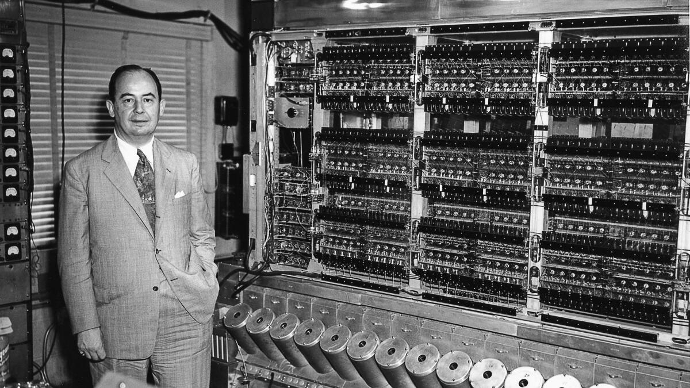
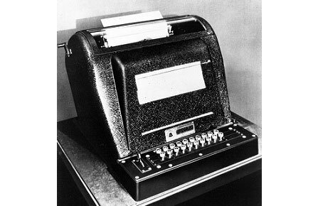
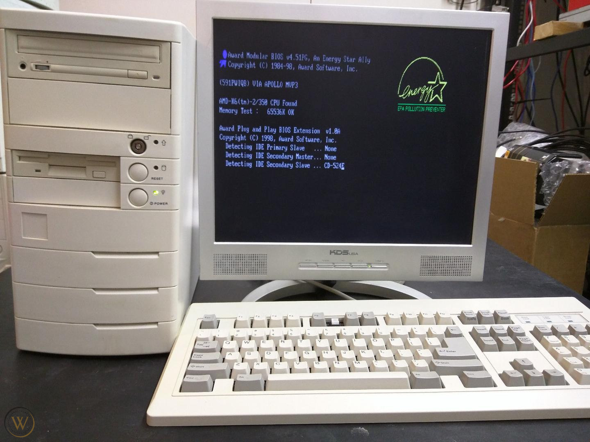

The History of Computer Science

The history of computer science dates back to the early 1800s when
mathematician Charles Babbage conceptualized the idea of a machine
that could perform mathematical calculations automatically. This
machine, called the "Difference Engine," was never fully completed
but laid the foundation for the development of modern computers. In
the late 1800s and early 1900s, a number of other machines were
developed that could perform various computational tasks. For
example, in 1890, the U.S. Census Bureau used a machine called the
"Tabulating Machine" to help tabulate the census data. In the 1930s,
Alan Turing developed the concept of a "universal machine" that
could perform any computation that could be carried out by a human
computer. During World War II, the development of computers
accelerated as governments sought to use computers to help with
military operations. The first electronic computer, called the
ENIAC, was developed in the United States in 1945. It was a massive
machine that weighed over 27 tons and was used to perform
calculations for the U.S. military. In the 1950s and 1960s, the
development of computer languages such as COBOL and FORTRAN made it
easier for programmers to develop software. The first commercially
successful computer, the IBM 360, was introduced in 1964 and was
used by businesses and governments around the world. In the 1970s
and 1980s, the development of personal computers made it possible
for individuals to have access to computing power in their homes.
The rise of the internet in the 1990s transformed computing, making
it possible for people to communicate and share information on a
global scale. Today, computer science continues to evolve and
expand, with the development of artificial intelligence, quantum
computing, and other emerging technologies. The history of computer
science has been marked by a series of technological breakthroughs
and innovations, each building on the work of those who came before.
It has transformed virtually every aspect of modern life, from the
way we work and communicate to the way we access information and
entertainment.
Before 1900
The Wright brothers, Orville (1871-1948) and Wilbur (1867-1912), invented
and built the world's first successful airplane in 1903. The airplane was a biplane,
with two wings stacked on top of each other, and was made of wood and fabric. On December 17, 1903,
at Kitty Hawk, North Carolina, Orville Wright flew the airplane for 12 seconds,
covering a distance of 120 feet. The Wright brothers' invention revolutionized transportation
and paved the way for modern air travel.

1900 - 1939: The Rise of Mathematics
In the mid-20th century, the development of electronic computers marked
a major turning point in the history of computing. In 1941, Konrad Zuse (1910-1995),
a German engineer, built the world's first programmable computer, the Z3. The machine was made
of electromechanical relays and could perform addition, subtraction, multiplication, and division.
In 1945, John von Neumann (1903-1957) proposed the idea of a stored-program computer, which would use a single memory
to store both data and instructions. This idea was implemented in the Electronic Numerical Integrator
and Computer (ENIAC), the first electronic computer, which was completed in 1946. The ENIAC was a massive machine,
weighing 30 tons and consisting of 17,468 vacuum tubes, 7,200 crystal diodes, and 1,500 relays.
It could perform about 5,000 additions per second. The development of electronic computers paved the way
for modern computing, enabling the processing of vast amounts of data at high speeds.

1980s
The 1980s saw significant developments in the field of artificial intelligence (AI),
including the emergence of expert systems and the continued advancement of machine learning techniques.
Expert systems were computer programs that attempted to simulate the decision-making abilities of a human expert
in a particular field. These systems were used for tasks such as medical diagnosis, financial planning,
and engineering design. Machine learning techniques such as neural networks and genetic algorithms also made
significant progress during this decade, with applications ranging from speech recognition to robotics. Additionally,
the development of graphical user interfaces (GUIs) and the widespread adoption of personal computers led
to the democratization of computing and a new era of user-friendly software.

1990's and Beyond
Parallel computers continue to be developed.
Biological computing, with the recent work of Len Adleman on doing computations via DNA,
has great promise. The Human Genome Project is attempting to sequence all the DNA in a single human being.
Quantum computing gets a boost with the discovery by Peter Shor that integer factorization can be performed efficiently
on a (theoretical) quantum computer.
The "Information Superhighway" links more and more computers worldwide.
Computers get smaller and smaller; the birth of nano-technology.
